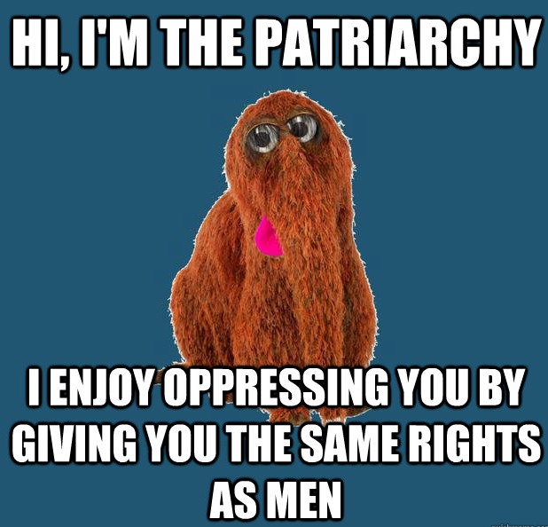

Daryush "Roosh" Valizadeh created ROK in October 2012. You can visit his blog at RooshV.com or follow him on Twitter and Facebook.


Anger at feminism has reached an important stage: women are now gathering and sharing photos about their disgust against the feminist movement. While their cause is still in the primodial stage, this is nothing short of a severe slap in the face of feminism since their “default” victims are human beings with a vagina. Finally, girls are waking up and realizing that feminism is not making them happier. They are now seeking out more traditional ways of life where their feminine side is nurtured instead of obliterated. I took some time to go through the Women Against Feminist blog (and Facebook page) to highlight their ten best contributions.

While it’s safe to be skeptical of this new movement since it will undoubtedly benefit women first under the “equality” banner, it’s important to note that mainstream feminism, for all its gains, has failed to win the hearts and minds of its primary target. Considering such female protest didn’t even exist a couple years ago, I see it as a great step forward to educating the public that feminism is not the answer. Irrelevancy appears to be its next stop, hopefully within our lifetimes.
 If you like this article and are concerned about the future of the Western world, check out Roosh's book Free Speech Isn't Free. It gives an inside look to how the globalist establishment is attempting to marginalize masculine men with a leftist agenda that promotes censorship, feminism, and sterility. It also shares key knowledge and tools that you can use to defend yourself against social justice attacks. Click here to learn more about the book. Your support will help maintain our operation.
If you like this article and are concerned about the future of the Western world, check out Roosh's book Free Speech Isn't Free. It gives an inside look to how the globalist establishment is attempting to marginalize masculine men with a leftist agenda that promotes censorship, feminism, and sterility. It also shares key knowledge and tools that you can use to defend yourself against social justice attacks. Click here to learn more about the book. Your support will help maintain our operation.
Read Next: The Equality Movement Is Allowing Women To Tyrannize Men